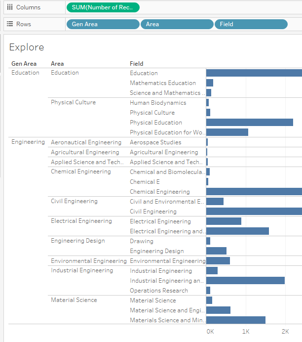
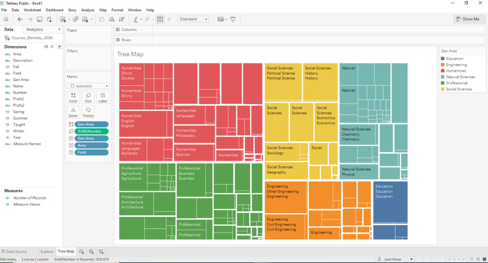
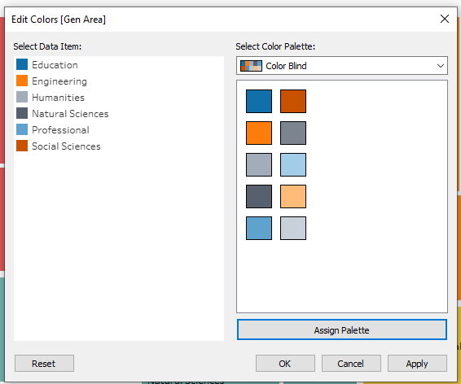
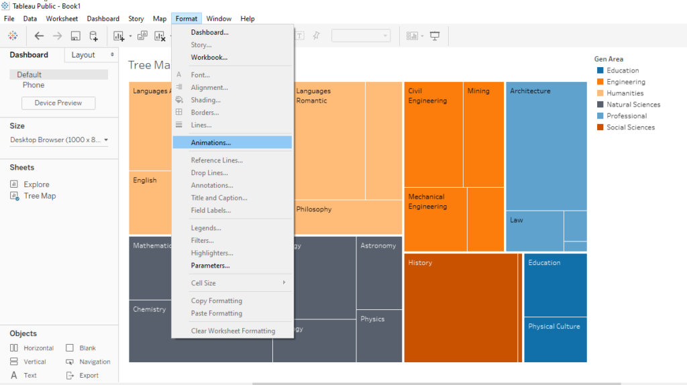
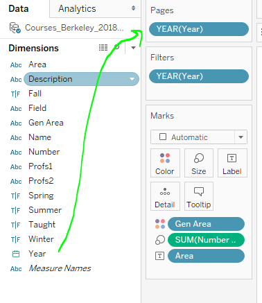
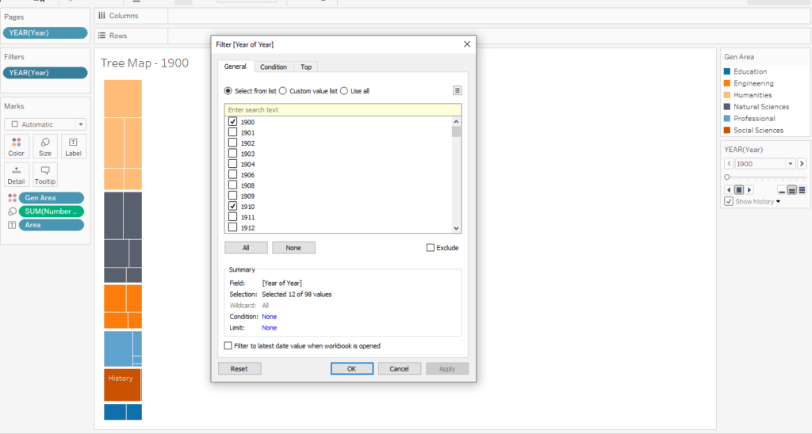
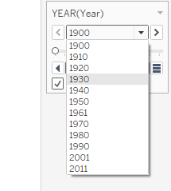
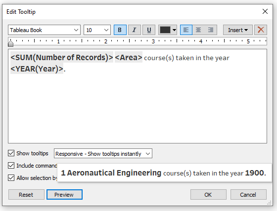
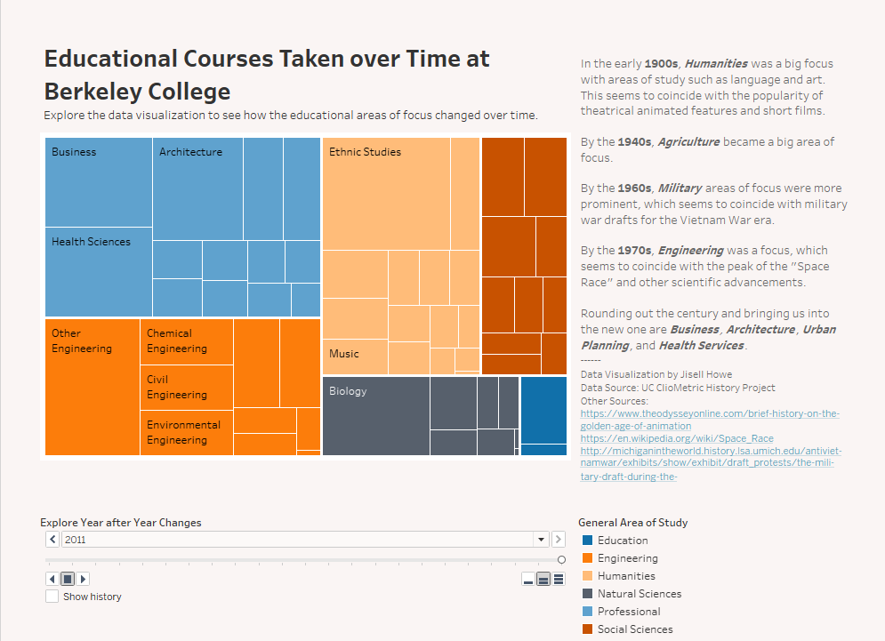

About a month ago, Tableau fully introduced data #VizAnimations outside of beta in its 2020.1 release. I thought it would be really fun to try animating a data set that had changing values over time.
This week’s MakeoverMonday challenge looked at educational offerings by Berkeley College over the last 100 years or so. What I found really interesting was that the educational courses that were taken seemed to correlate with big events and eras in history.
How would one know about these trends over time?
By animating the changes over time in the Berkeley data set, I am able to see exactly how everything shifted around and grew as the years pass. Often times, if we are looking at multiple static graphs, we need to study the differences. Not in this case!
Context Behind the Tutorial
Prior to coming to the conclusion of animating this data set, I was struggling a bit while brainstorming. I was trying to figure out another way to show proportions that was not a pie chart. Why not a pie chart?
Well, pie charts themselves might not be too bad if there are only a few items in a proportion, but there are a lot of pieces in the original charts that make it a challenge to gather useful insights.
Learn how to animate your insights with Viz Animations.
Tutorial
Once I opened up Tableau Public and connected the data source, I created a bit of an exploratory workbook to figure out just what is going on in this data set. Often times, you’ll find that you can’t just poke around and start visualizing things right away. You need to prep data when it’s messy and explore what is going on with it.

In this case, I wanted to find out how exactly these classes were organized in a hierarchy. It looked like there were names of classes, fields, an educational area, and a more broader general area. There were also other factors such as when the classes were taught, whether it was just listed or actually taken, and more.
This exploration helped me see that I wanted to break these down by general areas to try to cut down on the visual complexity. Here are some default colors that popped up.

I happened to make mine fit more of a colorblind friendly color scheme, but either way I personally think getting down to six colors is already a win.

Now for the fun part. After I initially set up my dashboard with a fixed size, I went to Format>Animations to turn on animations!

Then, I went over to the workbook itself to drag Year to the Pages card and to the Filters card. What this will do is let me pick out which years I want in this animation. It also allows me to pick out how I want the animation to behave.

I ended up selecting every five years, so I could get a good idea of what happened during each decade.

Whatever I selected in the filters card ended up in this little drop down list. This little card lets the animation work.

Final Touches
To add a final touch, I modified the tool tips in the workbook to read more like sentences. Here’s how that turned out.

Here is the final data visualization with added text on the side in the dashboard. I dragged and dropped “text” and “blank spaces” in a tiled way on the dashboard to rearrange everything to be like what I wanted. Now we’re ready to animate in the final visualization!

Interactive dashboard available here
Here’s the animated data visualization! Enjoy!